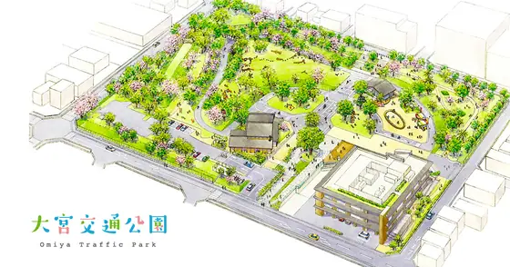

Japan / Kyoto / Kyoto
Kyoto · Kyoto
Kyoto
Highlighted on the Kyoto map.
Kyoto City Hall

Sights · Things to do · Places to eat · Places to stay · Day-to-day services
Nearby in Kyoto: ← Kyotango · Maizuru →
Other towns: Ayabe · Fukuchiyama · Ide · Ine · Joyo · Kameoka · Kasagi · Kizugawa · Kumiyama · Kyotamba · Kyotanabe · Kyotango · Maizuru · Minamiyamashiro · Miyazu · Muko · Nagaokakyo · Nantan · Oyamazaki · Seika · Uji · Ujitawara · Wazuka · Yawata · Yosano
All towns in Kyoto · Back to all prefectures